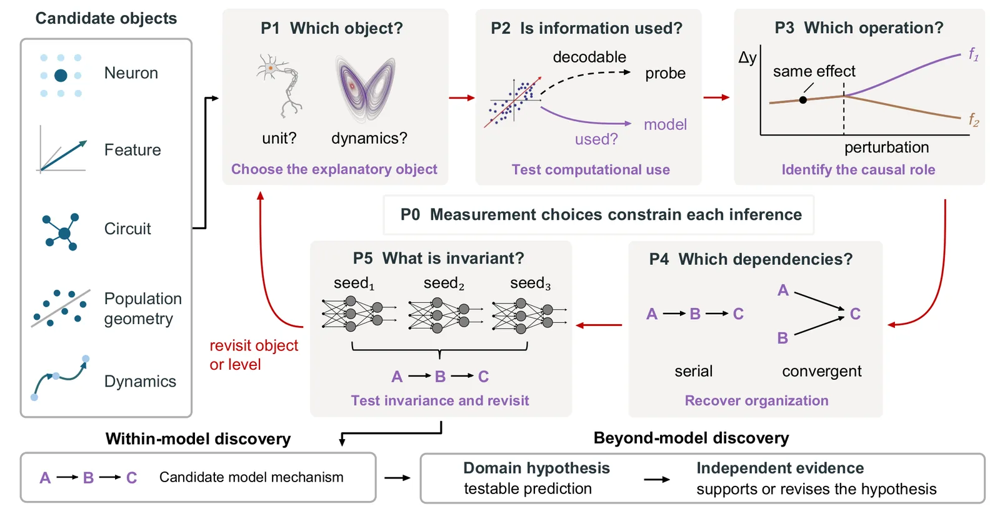

O Problema da Interpretabilidade Mecanística
A interpretabilidade mecanística (MI) em redes neurais artificiais (ANNs) avançou significativamente nas últimas décadas. Hoje, não estudamos apenas as saídas preditivas, mas os cálculos internos como objetos de investigação científica. Ferramentas modernas permitem identificar neurônios, features, circuitos e padrões dinâmicos associados ao comportamento do modelo. No entanto, o sucesso dessas ferramentas observacionais criou um novo problema: a lacuna entre 'ver' um feature e 'entender' a computação que o gera tornou-se mais ampla e sutil.
Em estudos anteriores, havia uma tendência a concluir que, se uma informação era recuperável de uma representação (via probing), o modelo a utilizava ativamente. Da mesma forma, intervenções foram usadas para estabelecer relevância causal sem identificar o papel computacional exato do componente. Trabalhos recentes tentaram abordar isso com frameworks conceituais ou práticas localizadas, mas faltava uma lógica geral para mover resultados de interpretabilidade para afirmações mecanísticas formais.
Os autores, pesquisadores do Georgia Tech e McGill University, identificam que a neurociência enfrentou problemas inferenciais similares ao tentar entender o cérebro. A neurociência fatorou questões amplas em perguntas mais precisas, separando o que um componente representa de como a informação é organizada, transformada e preservada. Este paper coalesce essas insights em um framework para a MI, propondo que precisamos de uma 'lógica de inferência' para conectar evidências de diferentes classes quando dissecamos sistemas neurais complexos.

A Lógica Recursiva de Inferência
O cerne da proposta é a organização da pesquisa mecanística como um processo recursivo guiado por cinco princípios. Este framework não é apenas uma lista de verificação, mas uma estrutura lógica que informa perguntas futuras e revisa reivindicações anteriores. O processo reconhece que uma única estudo pode abordar um subconjunto dessas questões e precisa revisitá-las conforme novas evidências surgem.
A estrutura começa com a noção de que não existe um único nível de abstração correto. Para um sistema neural dado com um comportamento de interesse, podemos investigar diferentes objetos candidatos: neurônios individuais, features abstratas, circuitos, geometria de populações ou dinâmicas temporais. A escolha do objeto explicativo é fundamental e restrita pelas escolhas de medição (P0).
Os princípios são desenhados para serem aplicados sequencialmente, mas também recursivamente. A evidência de um nível informa as perguntas do próximo, e discrepâncias podem exigir revisitar o objeto ou o nível de análise. Isso transforma a MI de uma coleção de achados locais em conhecimento cumulativo sobre mecanismos dentro dos modelos.
Princípio 0: Restrições de Medição
Antes dos cinco princípios principais, os autores introduzem uma restrição fundamental: P0. Toda inferência é constrangida pelas escolhas de medição. Isso significa que a forma como observamos o modelo (qual técnica usamos, qual granularidade, qual tipo de perturbação) limita estritamente o que podemos inferir. Não existe uma 'visão de Deus' ou observação neutra.
Se escolhemos observar apenas a ativação de neurônios individuais, perdemos informações sobre dinâmicas de população. Se usamos probing linear, podemos falhar em detectar não-linearidades complexas. P0 serve como um lembrete constante de que a inferência mecanística é sempre condicional ao método de observação. Ignorar P0 leva a conclusões prematuras sobre a natureza dos mecanismos subjacentes.
Princípio 1: Escolha do Objeto Explicativo
O primeiro passo ativo é P1: Qual objeto explica o fenômeno? O pesquisador deve escolher entre unidades individuais (neurônios), features latentes, circuitos locais, geometria de populações ou dinâmicas temporais. Esta escolha não é trivial e depende do comportamento de interesse. Por exemplo, para entender reconhecimento de objetos, uma feature específica pode ser mais relevante que a dinâmica temporal global.
A escolha do objeto define o escopo da explicação. Focar em neurônios individuais pode levar a explicações fragmentadas, enquanto focar em circuitos ou populações pode revelar lógica computacional emergente. P1 exige justificativa para a granularidade da análise. Não se pode saltar diretamente para explicações de alto nível sem considerar se o nível inferior oferece insights causais mais precisos.
Princípio 2: Uso Computacional da Informação
P2 aborda a lacuna clássica entre representação e uso. Apenas porque uma informação é decodificável de uma representação (probe) não significa que o modelo a usa ativamente em seus cálculos. P2 exige testar se a informação representada é efetivamente usada na computação subsequente.
Isso vai além do probing passivo. Envolve intervenções que perturbam a informação específica para ver se o comportamento do modelo muda de acordo com o uso esperado da informação. Se a remoção ou alteração de uma feature não afeta a saída do modelo, ela pode ser um artefato de treinamento, não um mecanismo funcional. P2 separa correlação estatística de utilidade computacional.
Este princípio combate a armadilha de assumir que 'se está lá, é usado'. Muitos features em redes neurais são redundantes ou residuais. Identificar quais features são essenciais para a computação atual é um passo crítico para uma explicação mecanística válida.
Princípio 3: Identificação do Papel Causal
Uma vez estabelecido que uma informação é usada (P2), P3 pergunta: Qual operação ela realiza? Identificar o papel causal significa mapear como a perturbação dessa informação afeta a saída (Δy). Isso requer isolar o efeito causal específico de um componente ou feature.
Os autores destacam que intervenções devem ser desenhadas para distinguir entre diferentes operações computacionais. Por exemplo, uma feature pode atuar como um filtro, um multiplicador de atenção ou um memorizador. P3 exige que o pesquisador identifique a função lógica ou matemática que o componente executa no pipeline de cálculo do modelo.
Sem P3, temos apenas relevância causal, mas não compreensão do mecanismo. Saber que 'X afeta Y' não é suficiente; precisamos saber 'como' X afeta Y. Isso transforma achados empíricos em descrições funcionais precisas.
Princípio 4: Organização das Dependências
P4 expande a visão de componentes individuais para a estrutura do circuito. Como os papéis causais identificados em P3 se organizam? As dependências são em série, convergentes ou divergentes? Este princípio busca reconstruir a arquitetura lógica do cálculo.
Isso envolve mapear como a informação flui entre diferentes features ou neurônios. A geometria da população e as conexões sinápticas (ou pesos de atenção) definem essa organização. P4 exige que o pesquisador identifique a topologia do circuito que implementa a função computacional.
A organização das dependências revela a robustez e a modularidade do mecanismo. Circuitos com dependências convergentes podem ser mais robustos a ruído, enquanto circuitos em série podem ser mais fáceis de interpretar. P4 conecta a micro-arquitetura à macro-funcionalidade.
Princípio 5: Invariância e Generalização
P5 pergunta: O que permanece invariante? Um mecanismo genuíno deve ser robusto a variações em sementes aleatórias, implementações ou condições de entrada. Testar a invariância é crucial para distinguir entre um mecanismo fundamental e um artefato acidental do treinamento.
Se um circuito identificado em um modelo com semente A não aparece em um modelo com semente B, mesmo com a mesma arquitetura e tarefa, a explicação mecanística está fraca. P5 exige que o pesquisador verifique a estabilidade do mecanismo proposto através de múltiplas instâncias ou condições.
A invariância também é a ponte para a descoberta 'além do modelo'. Mecanismos que são invariantes a implementações específicas sugerem princípios computacionais gerais, não apenas propriedades de um modelo particular.
Estrutura Recursiva e Acúmulo de Conhecimento
A força do framework reside na sua recursividade. As setas vermelhas no diagrama do paper mostram como as inferências se alimentam. A evidência de P5 (invariância) pode levar a revisar P1 (objeto escolhido). Se um mecanismo não é invariante, talvez o objeto de estudo esteja errado ou o nível de abstração seja inadequado.
Este processo permite que a MI avance de forma cumulativa. Em vez de cada paper apresentar um novo feature isolado, os pesquisadores podem construir sobre explicações mecanísticas anteriores, refinando-as com novos princípios. A lógica proposta transforma a MI de uma disciplina descritiva para uma explicativa.
A recursividade também lida com a complexidade. Sistemas neurais são tão complexos que uma explicação completa de uma vez é impossível. O framework permite decompor o problema em etapas gerenciáveis, onde cada etapa é validada antes de avançar para a próxima, mas sempre aberta a revisão.
Limitações e Escopo do Paper
É crucial notar que este paper é conceitual. Ele não apresenta novos algoritmos de MI, nem resultados empíricos extensivos em modelos grandes. O foco está na fundamentação lógica e na organização do campo. Os autores argumentam que a falta de uma lógica de inferência está impedindo o progresso científico na MI, e propõem este framework como solução.
O paper não fornece um guia passo-a-passo para implementação. A aplicação prática dos cinco princípios requer julgamento expert e adaptação ao contexto específico do modelo e da tarefa. Além disso, a distinção entre 'within-model' e 'beyond-model' discovery é mantida intencionalmente. O framework MI não garante que mecanismos encontrados em ANNs se apliquem ao cérebro humano ou a outros domínios sem evidência independente.
Os autores reconhecem que a validação final de hipóteses 'beyond-model' requer dados externos. O framework MI fornece as hipóteses e a plausibilidade interna, mas a conexão com o mundo real depende de outras disciplinas. Isso evita o reducionismo de assumir que entender a rede neural é suficiente para entender a inteligência.
Implicações para a Pesquisa Futura
Para pesquisadores de MI, este paper sugere uma mudança de mentalidade. Em vez de focar apenas em encontrar novos features ou circuitos, devemos focar em construir explicações causais robustas e invariantes. Cada estudo deve explicitamente abordar, na medida do possível, os cinco princípios.
Para a comunidade de IA em geral, a MI com lógica rigorosa pode levar a modelos mais confiáveis e explicáveis. Se podemos identificar e invariantizar mecanismos específicos, podemos criar modelos que generalizam melhor e são mais fáceis de depurar. A lógica de inferência proposta é um passo em direção a uma ciência da IA mais madura.
O framework também tem implicações para a neurociência computacional. Ao formalizar a inferência mecanística, a MI pode oferecer ferramentas quantitativas para testar hipóteses neurocientíficas, e a neurociência pode oferecer insights sobre como organizar a análise de sistemas artificiais complexos.
Conclusão
O paper 'Mechanistic Interpretability Needs a Logic of Inference' identifica um gargalo crítico na interpretabilidade mecanística: a falta de uma estrutura lógica para transformar observações em explicações causais. Ao propor cinco princípios organizados em um processo recursivo, os autores oferecem um caminho para tornar a MI mais rigorosa e cumulativa.
A proposta não é uma revolução tecnológica, mas uma revolução metodológica. Ela exige que os pesquisadores sejam mais explícitos sobre suas escolhas de medição, validem o uso computacional das informações, identifiquem papéis causais precisos, mapeiem organizações de circuitos e testem invariância.
No final, o objetivo é claro: transformar a MI de uma coleção de anecdotes técnicas em uma ciência de descoberta de mecanismos, capaz de gerar hipóteses testáveis tanto dentro quanto fora dos modelos artificiais.
O que fica
- A interpretabilidade mecanística precisa de uma lógica formal para conectar observações a explicações causais, evitando conclusões prematuras baseadas apenas em correlações.
- Os cinco princípios (P1-P5) formam um processo recursivo que guia a escolha do objeto, validação do uso, papel causal, organização do circuito e invariância.
- O framework distingue descoberta interna ao modelo (hipóteses de mecanismos) de descoberta externa (validação com evidência independente do mundo real).
- A invariância (P5) é crucial para distinguir mecanismos fundamentais de artefatos de treinamento, permitindo generalização e acúmulo de conhecimento.
Paper original: Mechanistic Interpretability Needs a Logic of Inference
Comentários
Nenhum comentário ainda. Seja o primeiro.